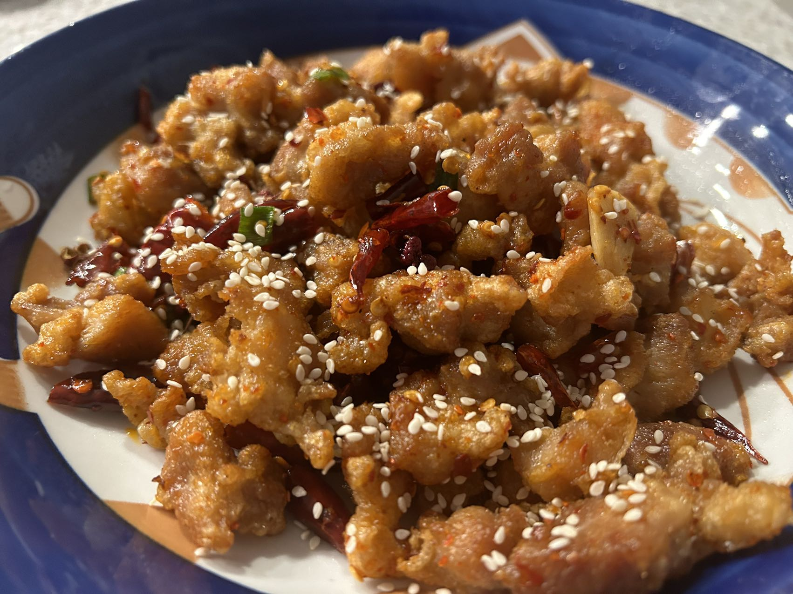
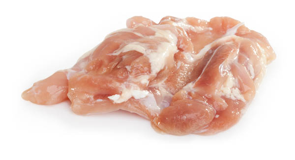
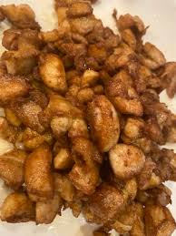
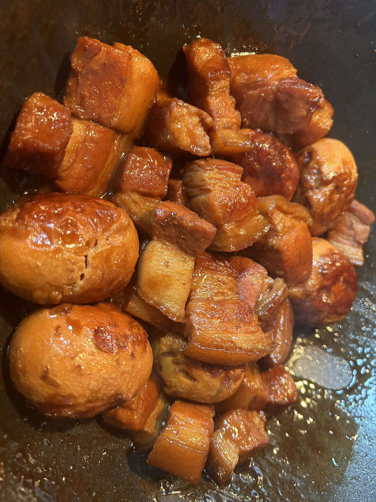
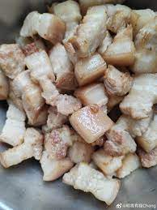
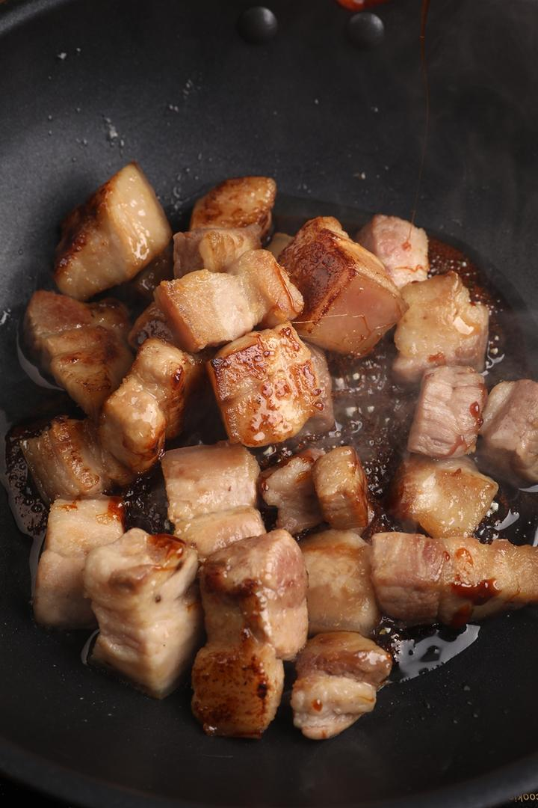
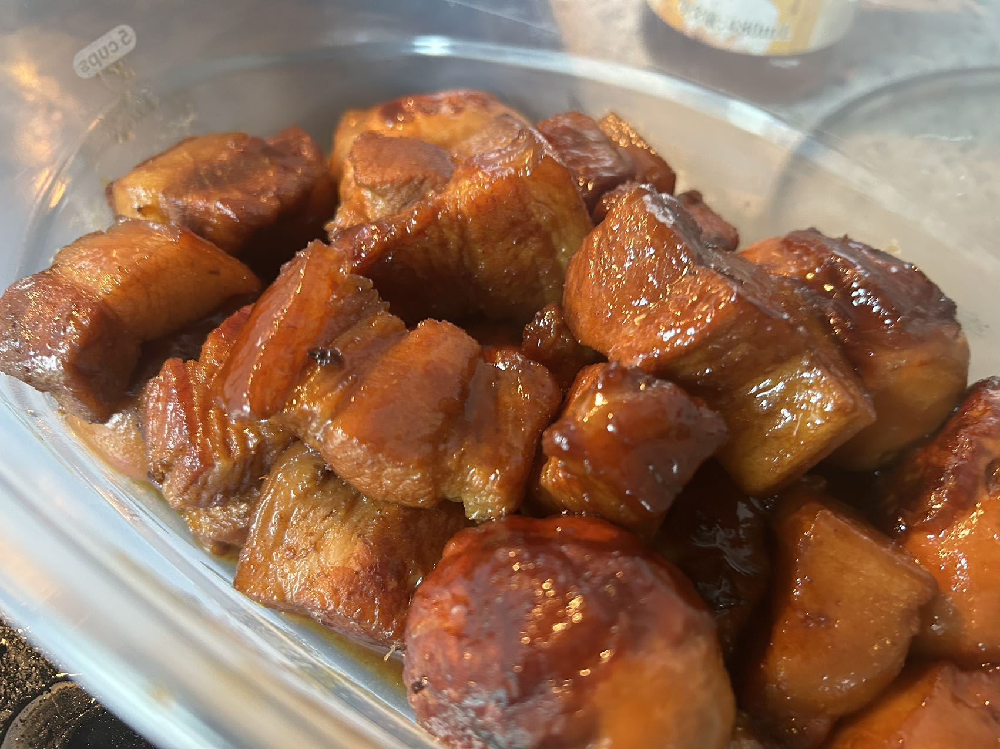
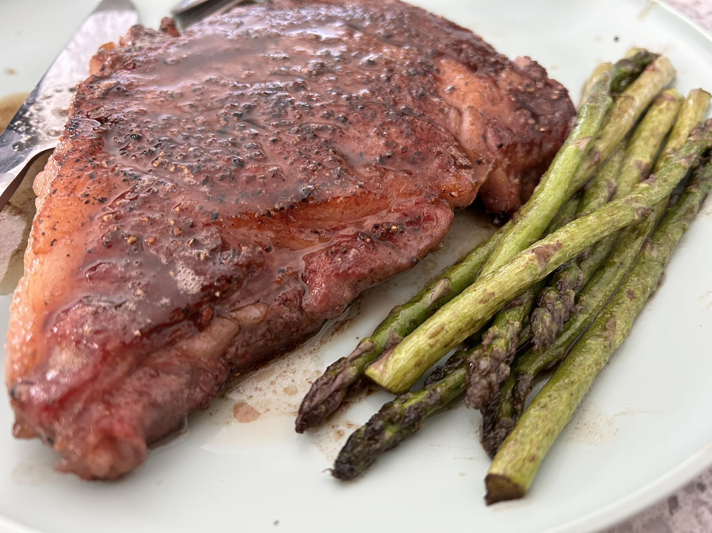

Spicy Chicken with Chili Peppers
Origin: Chongqing, China Source: Family Recipe Category: Main dish I learned how to cook this dish during the Covid pandemic where I was locked down at my home and could not go out.
Recipe Ingredients
- Chicken leg meat
- Ginger
- Corn starch
- Egg
- Dried chili pepper
- Sichuan Pepper
- Green onion
- Garlic
- Sugar
- Chili powder
- Soya sauce
Recipe Steps
- Debone the chicken and cut it into small pieces
- Marinate: One spoon of salt, two spoons of light soy sauce, two slices of ginger, a little cornstarch. Marinate for 20 minutes
- Prepare the dried chili peppers and soak them in warm water for about 5 minutes
- Heat the oil in a pan and start frying. Fry until golden brown, then remove from the oil. Increase the heat and fry again briefly, then prepare to remove from the oil
- Prepare a small bowl, add a spoon of chili powder, a bit of Sichuan peppercorns, and a spoon of white sugar
- Heat the oil in a wok, add the dried chili peppers, minced garlic, and chopped green onions, stir-fry until fragrant. Then add the chicken thigh meat, a spoon of light soy sauce, and the prepared seasoning from step 5. Stir-fry evenly
Additional Food images
 Braised Pork Belly
Origin: China Source: Family Recipe Category: Main dish I learned this dish when going to a potluck with my friends and each of us broght a dish made by ourselves.
Recipe Ingredients
- Pork belly
- Ginger
- Green onion
- Cooking wine
- Rock candy
- Soya saauce
- Oyester sauce
- Dark soya sauce
Recipe Steps
- Cut the pork belly into pieces, add spring onions, ginger, and cooking wine, and boil in water. Remove the pork and rinse it repeatedly, then drain the water and set aside.
- Heat a small flame and stir-fry the pork belly until it turns slightly yellow and releases oil. Add rock sugar and stir-fry until the sugar caramelizes.
- Add a spoonful of cooking wine, three tablespoons of light soy sauce, half a tablespoon of dark soy sauce, and a tablespoon of oyster sauce. Stir-fry until well mixed.
- Add boiling water.
- Bring to a boil over high heat, then reduce the heat to simmer for 50 minutes. Finally, increase the heat to thicken the sauce, and it's ready to serve.
Additional Food images
  Steak
Origin: Florence Source: Online tutorial recipe Category: Main dish I learned this dish in my sophomore year when living by myself so that I could cook for myslef conveniently.
Recipe Ingredients
- Beef steak
- Sea salt
- Black pepper
- Butter
- Garlic
- Olive oil
- Rosemary
Recipe Steps
- Use kitchen paper to wipe away the blood from the surface of the beef, and evenly apply sea salt and black pepper on the beef surface for marination.
- Pour olive oil into a pan and heat it on high heat. After the oil is hot, add the steak and sear each side for 1 minute to 1 minute and 15 seconds to achieve the Maillard reaction.
- Add butter to the pan and reduce the heat to low. Use a spoon to drizzle the melted butter over the surface of the steak. Add garlic, rosemary, and other vegetables.
- Sear each side of the steak for an additional 40 seconds and then remove from the pan. Add hot water to the pan and bring it to a boil to reduce the sauce.
- Pour the sauce over the surface of the steak.